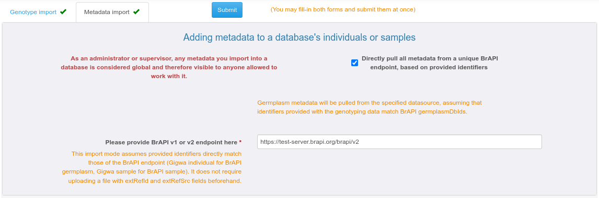
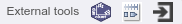
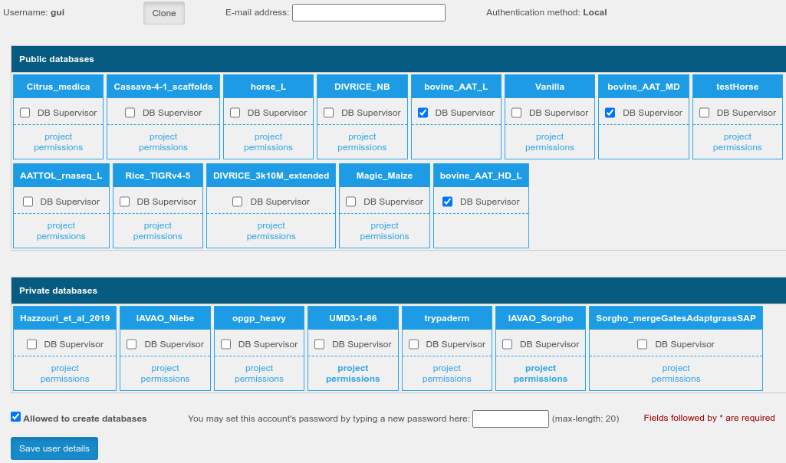

Gigwa v2.10.x – Documentation
Learn how to use Gigwa like a pro in a few minutes!
Watch demonstration videos on the project homepage:
http://www.southgreen.fr/content/gigwa
A/ USER DOCUMENTATION
A1/ IMPORTING DATA
Choosing "Manage data" then "Import data" from the main horizontal menu leads to a page dedicated to data imports, split in two sections accessible via tabs named "Genotype import" and "Metadata import".
Anonymous users and users with no particular permissions are limited to importing genotyping data into temporary databases that remain accessible for 24h. These databases are created as public but hidden (only visible to people knowing their precise URL and to administrators).
From the second tab, users may thus import metadata (traits, phenotypes...) for a database's individuals or samples. Metadata imported by users with write permissions (administrators, database supervisors, project managers) is considered "official" and therefore made available to all users by default. If specified by any other user, it will by only available for himself (thus completing / overriding the default metadata).
A1.1/ IMPORTING GENOTYPING DATA
Genotyping data may be provided in various formats (VCF, HapMap, PLINK, Intertek, FlapJack, DArTseq, BrAPI) and in various ways:
By specifying an absolute path on the webserver filesystem (convenient for administrators managing a production instance used as data portal);
By uploading files from the client computer (with an adjustable size limit: see section B8.2);
By providing an http URL, linking either to data files or to a BrAPI v1.1 base-url.
On the genotyping data import page, 3 more fields are required:
Database (not available to anonymous users since a "disposable" database is automatically generated for them): a database may contain one or several projects as long as they all rely on the same reference assembly. In the case of very large datasets, for performance-related matters it is however advised to have a single project per database;
Project: a project may contain one or several runs;
Run: each import process ends up adding a run to a project. Allowing multiple runs in a project is a way of supporting incremental data loading.
For each individual referred to from an import file (e.g., VCF), a sample is added to the database. Thus, this allows accounting for multiple samples for a same individual. By default, samples are given an auto-generated name, but it is possible to make Gigwa consider the names featured in import files as sample IDs rather than individual IDs (useful when using BrAPI for browsing data). This is achieved by checking the box labelled "Genotypes provided for samples, not individuals". Three different cases are then supported for naming individuals: (1) if no additional info is provided, individuals will be named same as samples; (2) from the "Genotype import" tab, users may supply an additional 2-column tabulated file listing ID mappings (with a header featuring 'individual' and 'sample'); (3) via BrAPI from the "Metadata import" tab" (explained below at A1.3).
Specifying a ploidy level is optional (most of the time, the system is able to guess it) but recommended for Flapjack and HapMap formats (will speed-up imports). A descriptive text can be provided for each project. A tooltipped lightbulb icon explains how to add a how-to-cite text that would then be exported along with any data extracted from the given project.

Genotyping data import progress can be watched in real time from the upload page, or via a dedicated asynchronous progress page (convenient for large datasets), while imports run as background processes.
A1.2/ IMPORTING METADATA, the classical way
Providing metadata may be done either for existing individuals / samples, or while importing them along with genotypes. Individual-level metadata aims at enabling users to batch-select them by filtering on it. This is convenient for cases where the individual list is long and / or individual names are not meaningful. Sample-level metadata can also be stored by the system but is currently not reflected in the default Gigwa UI (only accessible via BrAPI).
Metadata may be provided as a simple tabulated file containing user-defined columns (only one is enforced, named 'individual' or 'sample' depending on the selected target entities).
Importing metadata via BrAPI v1 or v2 is also supported. To do that, you must submit a tabulated metadata file with at least the 2 following columns (in addition to above-mentioned mandatory column):
extRefSrc which must contain the BrAPI url (e.g. https://test-server.brapi.org/brapi/v2) to pull entity metadata from;
extRefId which must contain the germplasmDbId or sampleDbId (on the BrAPI server) corresponding to the Gigwa individual or sample respectively referred to on the current line.
As a different extRefSrc may be provided on each line, it is possible to pull data from multiple BrAPI sources at once (user will be prompted for an optional token to use with each of them). In the end, Gigwa will attempt to grab germplasm or sample metadata from BrAPI to supplement user-provided information upon form submission.

A1.3/ IMPORTING METADATA at once from BrAPI, when provided identifiers match those in the BrAPI source
Providing metadata based on matching identifiers can be achieved by checking the "Directly pull all metadata from a unique BrAPI endpoint, based on provided identifier" box.
In this case, assuming that individuals in Gigwa correspond to germplasm in BrAPI and that names provided for biological material through the genotyping data file(s) match BrAPI dbIds, Gigwa just needs a valid BrAPI endpoint to populate metadata from its contents.
If the "Genotypes provided for samples, not individuals" box is checked in the first tab, the system will query the BrAPI endpoint to find all necessary germplasm information, and thus name individuals based on this.
A2/ WORKING WITH GENOTYPING DATA
From the home page, select a database and one or more project(s). Note the presence of an "Enable browse and export" checkbox that toggles between a mode where only variant counts are displayed, and one where users may browse, visualize and export selected data.
A2.1/ GENERAL FILTERING FEATURES

By default, a single grey filter panel appears, providing means to select variants based on their inherent attributes:
variant type (i.e. SNP, INDEL…);
sequence;
position;
if applicable, number of known alleles (when several are represented);
if applicable, functional annotations (if the data was provided as a SnpEff or VEP-annotated VCF file), with gene selection eased by a lookup functionality and support for pasting an externally managed list.
Users may also choose to select variants by IDs, by switching into a mode which is an alternative to using a combination of other filters. Variant selection is then supported via a dropdown with text lookup, clipboard pasting, or the providing of a local file.
As a general rule, a filter widget where no selection has been made will behave as if all its items were selected (no filtering applied on that field).
Right under the grey panel is a checkbox labelled "Work with samples". It allows to toggle between modes where biological material selection is made at the individual or at the sample level. Since genotyping data may be imported several times for a same sample, this also defines the level at which synthesis is made, and therefore the way the most frequent genotype is considered to be the right one in case of inconsistencies.
A2.2/ GROUP COMPARISON
|
At the bottom of this panel, a dropdown may be used to display up to ten additional panels that allow for more advanced filtering features based on subsets of individuals or samples, referred to as groups. All of these panels have the same initial contents and each one lets users select a list of individuals or samples (thus defining group contents). Group names may be set by users by just replacing the default values in the upper-right corner of each panel. Additionally, some handy tools are available on the right side of the selection dropdown via tooltipped icons:
All other widgets in the same panel will then let users apply genotype-level filters on the selected list of the biological entities:
|
 |
Useful tip: To identify variants for which genotypes are steady within groups but different between two of them, set both groups' genotype pattern to "All or mostly the same". In this case, in each group panel a similarity ratio lets you specify how many of the current group's selected biological entities must have the same genotype. Additionally, setting the "Discriminate with" widget to point to another group will ensure that the most frequent genotype in the first group is different from that in the second one. See online video number 4 for a demonstration.
Note that genotype-level filters are applied in the order they appear: the maximum missing data filter applies first, taking into account truly missing data and genotypes treated as missing because of low quality. MAF & heterozygosity ratios and genotype pattern queries are then applied at the same time, on the remaining (non-missing) genotypes only.
NB: When working on multi-run projects featuring several samples for a same individual, the following consistency rule had to be defined to be able to apply genotype patterns: for a given individual and variant, if a single most frequent genotype exists, it is the one accounted for, otherwise, this data-point is treated as missing.
A2.3/ BOOKMARKING QUERIES
After executing a query, any logged-in user may bookmark it from the hamburger menu. Each bookmarked query needs to be given a name and thus users may:
|

|
A2.4/ BROWSING / VISUALIZING VARIANTS
If the "Enable browse and export" box is ticked when clicking the Search button, then one may browse online the selection (i.e. list of variants that match the query). Clicking a variant line opens a dialog providing variant details along with biological entities' genotypes and optional complementary information like quality data or annotations.
"Quick variant stats" provide summarized figures for the overall selection, and for each group of biological entities.

Above the variant list:
 Gigwa embeds a Javascript version of the Integrative Genomics Viewer, IGV.js (© Broad Institute), allowing to conveniently watch the current variant selection along with genotypes of interest, within its genomic context, without the need to go through the export process. A number of genomes are provided in default (yet configurable) lists, and users working on non-model organisms may also let the genome browser point any to local genome track files.
Gigwa embeds a Javascript version of the Integrative Genomics Viewer, IGV.js (© Broad Institute), allowing to conveniently watch the current variant selection along with genotypes of interest, within its genomic context, without the need to go through the export process. A number of genomes are provided in default (yet configurable) lists, and users working on non-model organisms may also let the genome browser point any to local genome track files.
 A chart icon leads to a dialog in which, for each sequence represented in the current selection, various kinds of series charts (variant distribution, MAF, Fst, Tajima's D) may be computed, inspected online and downloaded. In the case where data was provided in VCF format containing numeric genotype-level fields (e.g. depth, genotype quality) an additional series can be displayed for each of these fields, on top of the main series;
A chart icon leads to a dialog in which, for each sequence represented in the current selection, various kinds of series charts (variant distribution, MAF, Fst, Tajima's D) may be computed, inspected online and downloaded. In the case where data was provided in VCF format containing numeric genotype-level fields (e.g. depth, genotype quality) an additional series can be displayed for each of these fields, on top of the main series;
|
An "External tools" box provides means to setup the application for interacting with / pushing data into external tools: an external online genome browser (e.g., GBrowse, JBrowse) can be configured for viewing each variant in its genomic context (via an extra icon at the end of each result table row); a running standalone instance of IGV can be fed with a VCF export file (refer to tooltip for details) Other third-party online systems (e.g. Galaxy, SNiPlay) can also be fed using files exported with the 'Keep files on server' box ticked (click online-output-tools icon for configuration details). NB: Use of external genome browsers or standalone IGV are now discouraged in favour of the embedded IGV.js solution |
 Clicking the download button opens a panel where users may select an output format, refine the list of biological entities to export, select their metadata fields to include (if available), and choose between directly downloading the output, or creating a file on the server (in which case its URL may be used later, shared or passed to external tools). A prototype version of Flapjack-Bytes (© JHI) is embedded and may be switched to after exporting into Flapjack format with the "Keep files on server" option (similarly to the way in which a standalone IGV instance can be invoked with VCF exports).
Clicking the download button opens a panel where users may select an output format, refine the list of biological entities to export, select their metadata fields to include (if available), and choose between directly downloading the output, or creating a file on the server (in which case its URL may be used later, shared or passed to external tools). A prototype version of Flapjack-Bytes (© JHI) is embedded and may be switched to after exporting into Flapjack format with the "Keep files on server" option (similarly to the way in which a standalone IGV instance can be invoked with VCF exports).
A3/ WORKING WITH REST APIs (for advanced users)
Any data imported into Gigwa is automatically interfaced via the following standard REST APIs, documented in a Swagger page available from the main menu:
The GA4GH v0.6.0a5 implementation has by design a single base-url. Listing available databases can be achieved by posting an empty body to /rest/ga4gh/referencesets/search. Thus obtained values can be then passed to other calls as referencesetId or datasetId.
The BrAPI v2.0 implementation has by design a single base-url. Listing available databases can be achieved by posting an empty body to /gigwa2/rest/brapi/v2/programs or /gigwa2/rest/brapi/v2/trials. Thus obtained values can be then passed to other calls as programDbId or trialDbId.
The BrAPI v1.1 implementation has by design a separate base-url for each database, constructed as follows: /{database}/brapi/v1/token. Each database's base-url can be deducted from the above-mentioned calls" responses, and by convenience, the main Gigwa interface provides a link to the corresponding BrAPI base-url when a new database is selected.
The table below lists terminology correspondences:
| Gigwa entity | GA4GH entity | BrAPI v1 entity | BrAPI v2 entity |
|---|---|---|---|
| database or module | referenceSet or dataset | database or map | program or trial |
| project | variantSet | genotyping study | genotyping study |
| assembly | - | - | referenceSet |
| run | - | - | variantSet |
| sequence | reference | linkageGroup | reference |
| variant | variant | marker | variant |
| individual | callSet | germplasm | germplasm |
| sample | - | sample or markerprofile | sample or callSet |
Please refer to http://ga4gh-schemas.readthedocs.io/en/latest/ and https://brapi.org/ for more details about each API.
B/ ADMINISTRATOR DOCUMENTATION
By default, a fresh instance of Gigwa comes with a single pre-defined administrator account (login: gigwadmin, password: nimda). It is of course strongly advised to change this password upon first connection (see section B6 below).
B1/ TOMCAT CONFIGURATION
Ready-to-use bundled packages should not require any changes in Tomcat configuration since the settings below have already been applied to them. However, if you install Gigwa in a production environment from fresh Tomcat binaries, it is necessary to apply the following modifications:
The bin/setenv.bat or bin/setenv.sh (depending on the platform) script must contain a line is as follows in order to dedicate enough RAM to Tomcat:
export CATALINA_OPTS="$CATALINA_OPTS -Xms512m -Xmx2048m" (Ubuntu / OSX)
set "JAVA_OPTS=%JAVA_OPTS% -Xms512m -Xmx2048m" (Windows)
(This setting may of course be adapted to get the best out of the hardware configuration: we found -Xmx8192m to be a good compromise on production servers with large amounts of RAM). If MongoDB and Tomcat are running on the same host (default for bundle archive installations) you should leave most RAM available for MongoDB though.
Adding the following line that same setenv script gets around a Log4j2 vulnerability (CVE-2021-44228):
export CATALINA_OPTS="$CATALINA_OPTS -Dlog4j2.formatMsgNoLookups=true" (Ubuntu / OSX)
set "JAVA_OPTS=%JAVA_OPTS% -Dlog4j2.formatMsgNoLookups=true" (Windows)
In the conf/server.xml file, the main Connector element must be configured as below:
maxHttpHeaderSize="65536" maxParameterCount="-1" maxPostSize="-1"
B2/ APACHE CONFIGURATION
In production environments, Tomcat often runs behind an Apache proxy. If such is your case, you must include the following line in your VirtualHost configuration:
ProxyTimeout 86400
Otherwise, when Gigwa is undertaking a process that is meant to last long, Apache may stop waiting for Tomcat to respond, and the interface will fail in displaying results.
B3/ ENABLING PASSWORD ENCRYPTION (for "local" user accounts)
User information is stored in WEB-INF/classes/users.properties. By default, passwords are not encoded. Administrator may enable password encoding to enhance security by:
B4/ PASSWORD RESET FUNCTIONALITY (for "local" user accounts)
This feature becomes active if a valid org.springframework.mail.javamail.JavaMailSenderImpl bean is added to applicationContext-MVC.xml (see https://github.com/SouthGreenPlatform/Gigwa2/blob/master/src/main/resources/applicationContext-MVC.xml for an example). As of v2.9, Gigwa supports attaching an e-mail address to user accounts, which is required for this feature to be used. Please note that:
B5/ CENTRAL AUTHENTICATION SERVICE COMPATIBILITY
Single-Sign-On is supported via the implementation of the CAS protocol. If your organization is using CAS, making users of your Gigwa instance able to authenticate via their institutional account is as simple as defining the following parameters in WEB-INF/classes/config.properties:
Single-Sign-On is supported via the implementation of the CAS protocol.
An optional parameter named casOrganization provides means to specify your organization name, that will then appear on the login page to make things clearer to end users.
Enabling CAS authentication does not affect previously created "local" accounts, the system is able to handle both types of accounts simultaneously.
B6/ MANAGING DATA
The visibility of a database is defined using two flags (default values in bold):
public / private: if public, anyone (even anonymous users) can search this database; if private, only administrators and users who were explicitly granted permissions may do so;
hidden / exposed: if hidden, only administrators will see the database in the main menu list; if exposed, any entitled user (that is, anyone if database is public, otherwise any user with permissions on at least one of the database's projects) will see it in the list.
In other words, the first flag defines visibility on the server side while the second defines exposure on the client side. Typically, a temporary database created by an anonymous user or a user without any management permissions will be public and hidden (searchable by anyone, listed to the administrators only), and will be made accessible to its creator via a specific URL referring to the database name (thus accessible to anyone if shared).
Administrators can see all databases (even if private and/or hidden) and have all privileges on them. Only administrators and users with role DB_CREATOR (granted by ticking the "Allowed to create databases" box in the user permission page) may create permanent databases. This can be done either at import time, or via the main menu's "Manage data" link, by subsequently clicking on "Manage databases". The simple interface below allows then to create an empty database on a selected MongoDB host. The featured table lists existing databases, and for each of them, provides means to link it to a taxonomy level, set its public and hidden flags, delete existing runs or projects. Administrators and database supervisors may also manage dumps and discard databases.

The dump/restore functionality was implemented in order to provide means to easily generate a "backup" of an entire database and thus prevent data loss in case of server crash. In the database list, a color code tells whether or not an up to date dump exists for each of them. Dump/restore operations can be launched with a few clicks, logs can be viewed while the process is running and are kept available for subsequent reference. For this functionality to be enabled, the system running Tomcat must have MongoDB Command Line Database Tools installed, and a parameter named "dumpFolder" in config.properties must point to a location Tomcat has permissions to write to (which may lie on a remote mounted filesystem, ideally backed-up periodically). Dump files may be downloaded by administrators and database supervisors who may thus manage an extra copy for even more safety.
B7/ MANAGING USER ACCOUNTS AND PERMISSIONS
By choosing the "Administer existing data and user permissions" link from the "Manage data" menu item and subsequently clicking on "Manage users and permissions", administrators may access an interface for creating / deleting users, setting their password (even their own) and permissions:
at the database level by granting the SUPERVISOR role which provides all permissions on a given database;
at the project level by granting either the READER role (only makes sense for projects in private databases) which allows to search the given project's data, or the MANAGER role which also allows to search project data, import additional genotyping runs or individual metadata, and grant roles to other users on that project.

Thus, a user with the MANAGER role on a project can administer that project in the same way as an administrator, via the main menu's "Manage data" item also available to him after authentication. The same applies to users with the SUPERVISOR role on a database, who can manage all of its contents.
By clicking on a magnifier icon, any user who has at least the project manager role can configure other user's access to the data he manages. As of v2.9, when logged in as administrator, from that same user permission management page, it is possible to grant users the right to create permanent databases by ticking the "Allowed to create databases" box. When they do create a new permanent database, those users are automatically granted the supervisor role on it (i.e., all actions allowed).
Note that the e-mail address field is optional for administrators editing simple users' details, but mandatory for simple users editing their own details. As described in section B4, a valid e-mail address is required for using the password reset functionality.
B8/ CONFIGURING ADVANCED SETTINGS (FOR SYSTEM ADMINISTRATORS: REQUIRES WRITE PERMISSIONS ON INSTALLED FILES)
Although a Gigwa instance installed via a distribution package is functional out of the box, some configuration settings can only be adjusted by editing text files. Most of them only need to be set once.
B8.1/ Managing data hosts
Declaring MongoDB hosts is done via the WEB-INF/classes/applicationContext-data.xml file following provided examples. For hosts running with authentication enabled (refer to MongoDB documentation if needed) a "credentials" parameter must be supplied for the corresponding mongo:mongoclient tag. Those credentials must be provided for a user declared in MongoDB's admin collection, who has readWriteAnyDatabase and dbAdminAnyDatabase roles. The web-application needs to be reloaded for such changes to be taken into account (please refer to Tomcat documentation if needed).
B8.2/ Setting configuration properties
By default, configuration parameters shall be set via the WEB-INF/classes/config.properties file. But their values may be superseeded by defining environment variables with the same name prefixed with "GIGWA." (particularly useful when using the Docker version). The list of supported parameters as follows:
customHomepageParagraph - Allows inserting a custom HTML block in Gigwa homepage, right above institutional logos
dbServerCleanup - You may specify under this property, a csv list of hosts for which this instance will drop temporary variant collections on startup (e.g. 127.0.0.1:27017, another.server.com:27018). Temporary variant collections are often used once a search has been completed, for browsing/exporting results. They are normally dropped upon user interface unload, but some may remain if the web-browser is exited ungracefully or the application goes down while someone is using the search interface. If this property does not exist then the instance will drop all found temp collections, if it exists but is empty, none will be dropped.
adminEmail - If Gigwa is being used as a multi-user data-portal you may specify via this property an email address for users to be able to contact your administrator, including for applying for account creation.
igvDataLoadPort - Defines the port at which IGV listens for data submission. No IGV connection if missing / invalid.
igvGenomeListUrl - Defines the URL from which to get the list of genomes that are available for IGV. No IGV connection if missing / invalid.
sessionTimeout - Web session timeout in seconds. Default: 3600 (1h)
tempDbHost - Tells the system which MongoDB host to use when importing temporary databases (for anonymous users). Only used when several hosts have been configured in applicationContext-data.xml. If unspecified all connected hosts will be available for use. If invalid, no import will be possible for users without specific permissions.
maxImportSize - Defines the default maximum allowed size (in megabytes) for genotyping data file imports (capped by the maxUploadSize value set in applicationContext-MVC.xml). Default: 500Mb. NB: Does not apply to administrators (administrators are only limited by maxUploadSize for uploads and are not limited when importing via local or http files)
maxImportSize_anonymousUser - Defines the maximum allowed size (in megabytes) granted to anonymous users for genotyping data file imports. Default: maxImportSize
maxImportSize_USERNAME - Defines the maximum allowed size (in megabytes) granted to the USERNAME user for data file imports. Default: maxImportSize
serversAllowedToImport - CSV list of external servers that are allowed to import genotyping data.
genomeBrowser-DATABASE_NAME - Any property named genomeBrowser-DATABASE_NAME is a way for defining a default genome browser URL for a database called DATABASE_NAME. This is optional as users may define their own genome browser URL, thus overriding the default one if it exists.
onlineOutputTool_N - Any property named onlineOutputTool_N with N being an integer >= 1 is a way for defining an online output tool for datasets exported to server. N accepts consecutive values (if only onlineOutputTool_1 and onlineOutputTool_3 exist then only onlineOutputTool_1 will be taken into account). The property value must consist in semi-colon-separated values:
maxSearchableBillionGenotypes - Defines the maximum estimated size (in billions) of the genotype matrix (#bio-entities * #markers) within which genotype-level filters may be applied. This property may be tuned according to server performance. #markers is estimated by calculating an average marker count per sequence. Whatever value is set here, Gigwa will at least allow searching on one sequence for all biological entities. Default: 1 billion
maxExportableBillionGenotypes - Defines the maximum size (in billions) of the genotype matrix (#bio-entities * #markers) that may be exported. This property may be tuned according to server performance. It aims at limiting system overhead in situations where numerous users may be working on very large databases. Default: 1 billion
maxExportableBillionGenotypes_anonymousUser - Defines the maximum size (in billions) of the genotype matrix (#bio-entities * #markers) that may be exported by anonymous users. Set to 0 to prevent from exporting genotypes. Default: maxExportableBillionGenotypes
maxExportableBillionGenotypes_USERNAME - Defines the maximum size (in billions) of the genotype matrix (#bio-entities * #markers) that may be exported by the USERNAME user. Set to 0 to prevent from exporting genotypes. Default: maxExportableBillionGenotypes
googleAnalyticsId - If set, a Google Analytics tag is automatically added into the main page.
enforcedWebapRootUrl - In some situations the system needs to provide externally visible file URLs for remote applications to download. In most cases it is able to figure out which base URL to use, but it might also be impossible (for example when a proxy is used to add a https layer). This parameter may then be used to enforce a base-URL. (Required for CAS authentication) Example values: https://secured.server.com/gigwa or http://unsecured.gigwa.server:59395
casServerURL - If defined, enables CAS authentication by defining the CAS server URL (enforcedWebapRootUrl is also required for the CAS server to know how to redirect to Gigwa after login)
casOrganization - Defines the name of the organization providing the CAS authentication. Optional
variantIdLookupMaxSize - Defines the limit number of variant IDs that are returned by the text lookup functionality of the "Variant IDs" widget. Default: 50
igvGenomeConfig_N - Properties named igvGenomeConfig_N with N being an integer >= 1 provide sets of online genomes to be displayed as default genome lists for the embedded IGV.js browser. Each property must be in the form igvGenomeConfig_N = Name;URL
dumpFolder - Enables the dump management functionality by defining the location where dumps will be stored on the application-server's filesystem (Requires installing MongoDB Command Line Database Tools on the machine running Tomcat)
allowedOrigins_<PATH> - Properties with prefix "allowedOrigins_" allow tuning CORS behaviour using Ant-style path patterns. The default allowedOrigins_/**=* entry enables CORS from any origin for all URLs starting with [context-path]/rest/
Other examples overriding the default for more specific path patterns:
clearCachedCountsOnStartup - Gigwa caches count values for submitted queries (makes subsequent calls respond faster); this property allows emptying this cache on webapp startup. Default: false
snpclustLink - URL pointing to a SnpClust instance (for editing SNP genotypes based on fluorescence intensity values)
enableExperimentalFeatures - Tells whether or not to activate experimental features. The only one currently is Jukes-Cantor neighbour joining tree export. Default: false
maxQueryThreads_HOST - Any property named maxQueryThreads_HOST where HOST stands for a mongo-client id specified in applicationContext-data.xml allows to set the number of CPU-threads Gigwa is allowed to use for querying a given host. This may be used to modulate allocation of MongoDB server resources to a given webapp instance. Setting this value to little less than its number of cores may lead to a substantial performance gain. If this not set, the system, as it always used to, attempts to regulate the number of concurrent queries by monitoring response times.
alleleSearchMaxTotalPageSize - The default implementation of Brapi V2's /search/allelematrix call limits the number of genotypes per invocation to 10,000. Set this parameter to a different value if you need to modify that limit
mandatoryIndividualMetadata-DATABASE_NAME - Any property named mandatoryIndividualMetadata-DB_NAME is a way for defining a list of semi-colon-separated mandatory fields to enforce when importing metadata for individuals into that database. Each field name may be followed by a description between brackets. Similarly, the suffix-less mandatoryIndividualMetadata property sets the default for all databases. If field name is prefixed with '*' then blank values will be rejected at import time.
mandatorySampleMetadata-DATABASE_NAME - Any property named mandatorySampleMetadata-DB_NAME is a way for defining a list of semi-colon-separated mandatory fields to enforce when importing metadata for samples into that database. Each field name may be followed by a description between brackets. Similarly, the suffix-less mandatorySampleMetadata property sets the default for all databases. If field name is prefixed with '*' then blank values will be rejected at import time.
termsToAcceptToMakeDatabasePublic - If set, its text value will be displayed for the admin / data owner for confirmation before he can switch a DB's status from private to public
termsOfUseCookieDuration - Sets the terms-of-use display frequency in hours (default is 72, any number <= 0 means display each time)
customTermsOfUseHtmlParagraph - Optional HTML block that may be appended to the default Terms Of Use dialog
maxPcaMatrixSize - Max dimension of the genotyping matrix (#samples x #SNPs) to calculate PCA on. Default is 1 billion (1E9)
maxDistanceMatrixSize - Max dimension of the genotyping matrix (#samples x #SNPs) to calculate distance matrix on. Default is 1 billion (1E9)
B9/ MONGODB CACHE CONFIGURATION
In production environments with large amounts of RAM, we found it worth to tune the --wiredTigerCacheSizeGB parameter. If left unspecified, it defaults to nearly a half of the available RAM, and essentially aims at reserving memory for manipulating indexes. As Gigwa does not make an enormous use of indexes, we found that in most cases, setting it to 10 Gb is more than enough. This leaves the remaining memory available for other operations such as collection-scans, and can significantly improve performance (at least for searches).
We did not take the responsibility to enforce this as a default value in our bundles or Docker images because 10 Gb would be far too high on small servers with a total of, say 16 Gb of RAM. This really has to be thought of according to the overall "platform" sizing. Checking the size occupied by indexes on your largest DB's variantRunData collection is probably a good starting point. Multiplying that by 3 or 5 is probably safe enough, although a more thorough benchmarking would be worth doing...
B10/ UI CUSTOMIZATION
As of v2.9, the front-end look can be somewhat customized, by adding a folder named "custom" to the webapp root, containing files named custom.css and custom.js. Any styles defined in the first will override the default ones, and the javascript file, if it exists, will be added via a <script> tag to any page containing the main horizontal navigation menu.